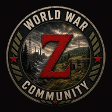

WWZ Server Companion
You’re Offline
The static app shell is available, but live server status, player data, economy, tickets, Shop purchases, moderation and Nitrado/server controls require a connection to Railway.
No live or protected WWZ response is treated as successful while the network is unavailable.